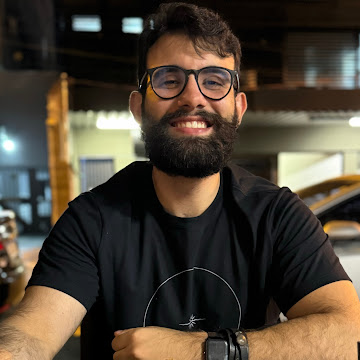

Ciência da Computação · Dados & IA · UFG
Construo pipelines de dados, modelos de Machine Learning e sistemas com foco em interpretabilidade. Pesquisador em Explainable AI no HAILab/UFG com publicação no IEEE SoutheastCon 2026.

// sobre mim
Estudante de Ciência da Computação pela UFG em fase final de graduação, com experiência prática em engenharia de dados, machine learning e desenvolvimento backend, adquirida na Residência Tecnológica BRISA/SOFTEX.
Pesquisador no HAILab (Human and Artificial Intelligence Lab), com foco em Explainable AI — interpretabilidade de modelos, explicações contrafactuais e métricas de qualidade de explicações. Minha pesquisa resultou em publicação submetida ao IEEE SoutheastCon 2026.
Baseado em Goiânia, GO. Disponível para posições remotas em análise de dados, ciência de dados e engenharia de dados.
// tecnologias
Ferramentas com que trabalho dia a dia em projetos reais.
linguagens
dados & machine learning
engenharia de dados
cloud & devops
bi & visualização
desenvolvimento
// projetos
Projetos desenvolvidos na residência tecnológica e pesquisa.
Framework open source para gerar automaticamente demos interativas de ML com SHAP + LIME, prontas para deploy no Hugging Face Spaces. Configuração via YAML, dois modos de demo: explicabilidade e pipeline completo.
ver no GitHubPipeline completo de séries temporais sobre dados reais de inflação (API do Banco Central): EDA, teste de estacionariedade, decomposição STL, modelos Prophet e SARIMA com avaliação comparativa (MAE/RMSE/MAPE) e dashboard interativo publicado.
Pipeline de dados completo: extrai indicadores econômicos reais da API do Banco Central, organiza em data warehouse PostgreSQL com arquitetura em camadas Bronze → Silver → Gold, orquestrado com Airflow (DAG com retries e agendamento) e totalmente containerizado com Docker.
ver no GitHubAnálise exploratória em formato de artigo sobre desocupação, informalidade e renda no Brasil (PNAD Contínua/IBGE, 2012–2024), recortada por raça, sexo e região — cada gráfico acompanhado de interpretação em texto corrido, construindo uma narrativa fundamentada sobre desigualdade estrutural no mercado de trabalho.
ver no GitHubPainel de indicadores com Power BI, modelagem star schema, DAX para métricas calculadas, Power Query para transformação de dados e integração via Direct Query com SQL Server.
API que serve dados socioeconômicos reais dos 5.570 municípios brasileiros (população, área, densidade e PIB — fonte: IBGE), com busca, filtros, ordenação, paginação e rankings, modelagem relacional em PostgreSQL, documentação automática via Swagger/OpenAPI e stack 100% containerizada.
ver no GitHubPlataforma para gerenciamento de workloads de IA em AWS EKS, com integração via APIs REST, pipelines de deploy automatizados e CI/CD com GitHub Actions para rastreabilidade em produção.
// pesquisa
Pesquisa em Explainable AI no HAILab/UFG.
Estudo comparativo de modelos de Machine Learning (Random Forest, XGBoost, SVM) para predição multiclasse de absenteísmo de funcionários, com análise de interpretabilidade via SHAP. Avalia trade-offs entre acurácia e explicabilidade para apoio à tomada de decisão.
// experiência
Pesquisador — Explainable AI
HAILab · UFG / CNPq — PIBITI
Desenvolvimento de biblioteca Python para explicações contrafactuais em modelos de ML. Implementação de técnicas SHAP e métricas de fidelidade e robustez.
Set 2025 – atual
Residente — Engenharia de Dados e IA
Residência Tecnológica BRISA · SOFTEX / UFG
Projetos práticos em pipelines ETL, processamento distribuído com PySpark, dashboards com Power BI e plataformas de IA em AWS EKS.
Set 2025 – atual
Assistente de Suporte de TI
Grupo Jaime Câmara
Queries SQL para análise de dados operacionais. Scripts Python para automação de processos internos, reduzindo tempo de execução de rotinas manuais em 40%. Integração de sistemas via APIs.
Jul 2023 – Jun 2024
Bacharelado em Ciência da Computação
Universidade Federal de Goiás (UFG)
Conclusão em 2026/1. Bolsa Futuro Digital — Back-End Python/Django (200h, média 10,0). Formação em Programação Softex/IFG.
2021 – 2026
// contato
Aberto a oportunidades remotas júnior em dados, IA e backend.